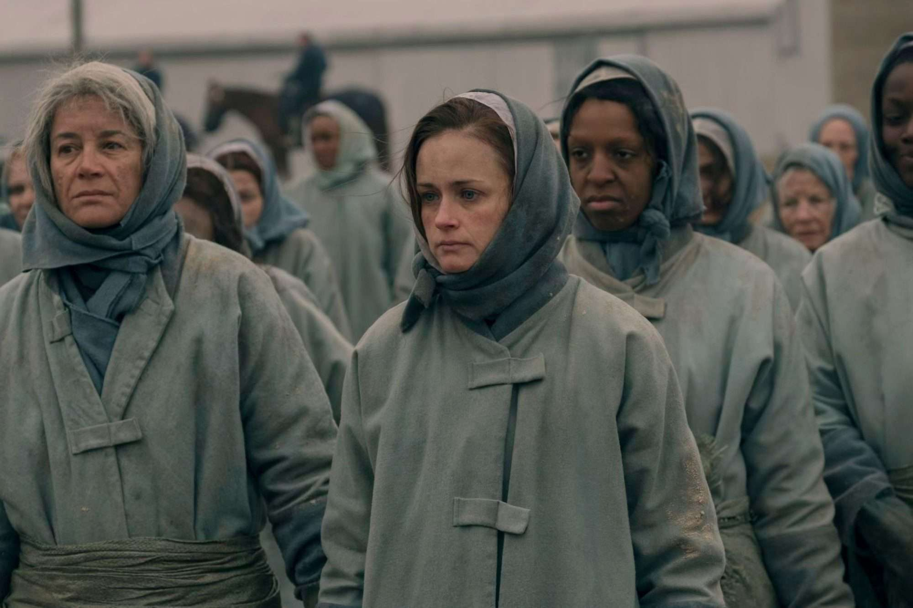

Resistencia Y Aliados
Emily Malek
Emily - Deglen - Desteven - Dejoseph
Científica, criada y combatiente
Emily Malek es una antigua profesora de biología celular. Es interpretada por Alexis Bledel.
En Gilead recibe distintos patronímicos, nombres que reflejan las sucesivas asignaciones con las que el régimen intenta borrar su identidad.
Vida antes de Gilead y persecución
Emily vivía con su esposa Sylvia y su hijo Oliver. El régimen declaró ilegal su sexualidad bajo la acusación de «traición de género».
Debido a su fertilidad fue reclutada por la fuerza como criada. Como compañera de compras de June, reveló su vínculo con la resistencia.
Su relación clandestina con una Martha fue descubierta y castigada con una mutilación, una de las formas más brutales de control ejercidas por Gilead.
Castigo, escape y regreso

Las Colonias
Después de varias reasignaciones, Emily fue enviada a las Colonias. Allí continuó resistiendo y envenenó a la señora O'Conner.
Canadá y la resistencia
Al final de la segunda temporada escapó con Nicole, se reunió con Sylvia y Oliver y afrontó las secuelas del trauma.
Más tarde volvió a luchar junto a la resistencia en Bridgeport, Connecticut.
Momentos decisivos
Hitos de la resistencia de Emily
-
01
Represión y mutilación
Su vínculo clandestino es descubierto y Gilead la castiga por «traición de género».
-
02
Resistencia en las Colonias
Sobrevive al destierro y ataca a una de las responsables de su sufrimiento.
-
03
Escape y regreso
Lleva a Nicole a Canadá y posteriormente vuelve a combatir junto a la resistencia.